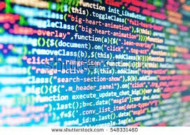

Computer Science course is designed to be an introduction to computer science from a high-level perspective. The course is taught with Python, a fully-featured high-level language. Rather than emphasizing low-level skills such as the implementation of data structures, students will use data structures in Python's standard library to solve more interesting re al-world problems. This will provide a much clearer context for further study in AP Computer science and beyond.
This course also teaches the use of Git and GitHub - popular, modern technologies that are used in the real world. The learning outcomes of GitHub are manifold. Students will learn how to manage source code repositories of increasing complexity, gain experience with a command line interface, learn tools that could help them in further study and industry, and learn how to effectively collaborate with other developers.
This course also provides a comprehensive introduction to software design concepts through the accessible and powerful language Python. Students solve problems and design projects spanning topics such as data structures, abstraction, data serialization, search algorithms, encryption, and object oriented design. Good habits, such as revision control with Git, are also be practiced. Students present work to their classmates at various points throughout the course. Students choose a final project to develop. This course provides a solid foundation for further study in computer science.
Course content is presented in the form of lecture, video lecture/demonstration, and readings from the textbook. All student work for the course happens in private repositories hosted on GitHub. Student and instructor are able to have private, threaded conversations, referencing specific lines of code and using markdown. For each project and each chapter from the text, students have a private repository assigned to them with starter code. The started code will, in many cases, include tests that the students can run to help them develop their software artifacts. GitHub issue tracking is used by the instructor to open issues as waypoints for students, guiding them in the major steps necessary to complete sophisticated projects.
Most of the exercises from the textbook are completed throughout the course, except for several optional chapters that will be skipped. Students are provided with private repositories, by chapter, with questions from the text already included as docstrings. This allows for rapid progression through many exercises.
In some cases, students work in pairs or groups. GitHub is designed for this kind of collaboration. Instructors can view contributions of each student, statistics on the number of lines and frequency of their contributions, and a full history of commits.
One year of college-preparatory electives is required to get into UC/California State University Colleagues.